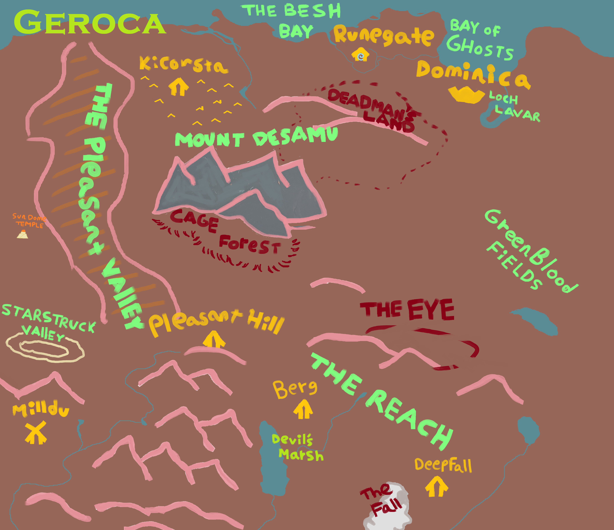
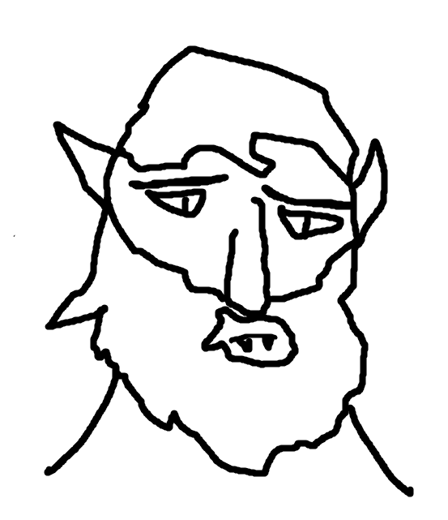
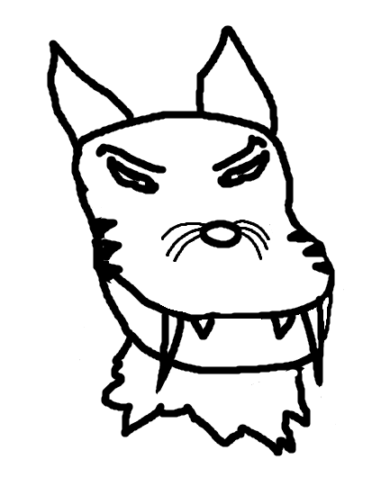

D&D Geroca Campaign
Index | Members | BackgroundWelcome
This is my personal webpage for hosting d&d updates for our games.
Geroca
In the Age of Conquest, Grand Hegemon of Teshiora, Horus Khan, sets out to expand his empire across the globe. With an infamous lineage of conquering emperors and empresses, the Empire's territory extends over the lands of many cultures and races, forcefully converted into a homogeneous people simply known as The Empire of Teshiora.
Lately the Grand Hegemon has had his sights on the distant lands beyond the Sea of Three Snakes named Geroca. His scouting parties have encountered wild tribes' folk, hostile foreign specters, beastmen, and various other dangerous foes that need cleansing in order the land to yield to the Empire.
Monsters

Manmur: Large human-like creatures are found in the Pleasant Valley self-identified as the Agimori. They have four small ears and hair that is stacked a meter above their heads. They worship heathenistic elemental demigods and hold powers of sky and earth. They view themselves as the rulers of Geroca and intend to stay that way. They are branded as enemies of the Empire and should be destroyed.
Beastmen: There have been sightings of large beasts in the lands south of Dominica that apparently are conjoined part man part beast. They have been reported to travel in herds of their kind and wield large axehead or spear weapons akin to our own. Most disturbing, these beasts seem to have magical dominion over their environment to an unknown extent. Traveler beware!

Dragonmen: From the infernal Mount Desamu arose a legion of reptilian skinned humanoids bent on reclaiming relics of their mysterious past. The dragonmen resemble deformed flightless incarnations of classic dragons with staunch worship of their ancesters. Emperial intellience suggests that this may be a lost dragonborn legion abandoned after the dragons retreated from the world of mortals. The Empire has yet to enter into a truce with these dragonmen of Mount Desamu. It is adviced by all of the Empire's citizens and subcitizens to stay clear of the Mountain under penalty of death.
Cat folk: Near the Green Blood Fields lays a large community of humanoid cat folk who showcase an understanding of the common Empire languages. These intelligent beasts are quick to adapt to our arrival, already preparing diplomatic delegates and trade conveys to appease our Emperor. Further south however the cat folk are anything but civil, ambushing travelers and stealing from Empire settlements. We have yet to hear from the people's leadership if these groups represent their intentions, but we have been advised to approach the cat folk with caution and suspicion.
BEASTS: Large beasts are a normal occurance in lands as lush and green as Geroca, however there are some beasts travelers should be aware of.

Gigorza: What is coming to be known as the Gigorza in the School of Beast Studies, this quadruped creature towers 3 men stacked together and can leverage the strength of 2 Dwarven smiths with a long facial trunk. Sighted around the Green Blood Fields, the Gigorza are docile when left alone but, when approach, will defend itself and its offspring with a fury that is believed to be unstoppable with conventional weapons. These creatures should be left alone.